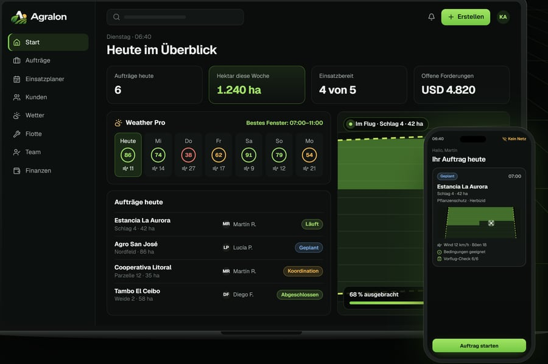

Pflanzenschutz
Ausbringung von Pflanzenschutzmitteln aus der Luft, ohne mit Bodentechnik durch den Bestand zu fahren.
Agrardrohnen-Dienstleistungen · Uruguay
Landwirtschaftliche Dienstleistungen mit der DJI Agras T100: Pflanzenschutz, Aussaat, Düngung und Einsätze auf schwer zugänglichen Flächen.

Warum aus der Luft
Schwere Maschinen sind nicht für jede Situation die beste Antwort. Mit der Drohne wird ausgebracht, ohne mit Rädern durch den Bestand zu fahren – und auch auf Flächen, die schwer zugänglich oder nicht befahrbar sind, eröffnen sich Möglichkeiten.
Ausbringung aus der Luft, ohne dass Maschinen durch den Bestand fahren.
Eine Alternative, wenn der Boden schwere Technik kaum trägt.
Jeder Einsatz wird passend zu Kultur, Mittel und Bedingungen auf der Fläche geplant und durchgeführt.
Technik, die für große Flächen ausgelegt ist – mit einem organisierten, effizienten Ablauf.
Leistungen
Ausbringung von Pflanzenschutzmitteln aus der Luft, ohne mit Bodentechnik durch den Bestand zu fahren.
Aussaat aus der Luft, zum Beispiel für Zwischenfrüchte und weitere Anwendungen, die das System zulässt.
Ausbringung fester Dünger aus der Luft – wenn Zeitdruck oder Bodenverhältnisse eine Lösung aus der Luft besonders sinnvoll machen.
Einsätze in Senken, auf schlecht befahrbaren Teilflächen und überall dort, wo herkömmliche Technik kaum hinkommt.

Technik
Eine Agrarplattform für den professionellen Einsatz.
Wir arbeiten mit einem großen Gerät, das für echte landwirtschaftliche Arbeit gebaut ist: Sprühen sowie Streuen von Saatgut und festem Dünger, mit Umgebungserkennung und geplantem Flug über die Fläche.
Millimeterwellen-Radar, LiDAR und Kamerasystem zur Hinderniserkennung. Herstellerangaben (DJI). Jeder Einsatz wird nach Kultur, Mittel und Bedingungen auf der Fläche eingestellt.

Kontrolle der Ausbringung
Gelbe Papierstreifen, die sich überall dort blau färben, wo Tropfen auftreffen. Auf der Fläche ausgelegt, zeigen sie, wie die Behandlung angekommen ist – die Benetzung wird sichtbar überprüfbar.
Einsatzbereiche
Nicht jede Anwendung passt zu jeder Kultur oder jedem Mittel. Ob ein Einsatz sinnvoll ist, prüfen wir im Einzelfall, bevor wir ihn einplanen.
Im Einsatz
Eigene Aufnahmen von Einsätzen von Kunz Agrotech mit der DJI Agras T100. Keine gestellten Szenen, keine Archivbilder.


So arbeiten wir
Kultur, Fläche, Lage und Art des Einsatzes.
Wir klären die wichtigsten Eckdaten und stimmen die Bedingungen ab.
Termin und Ablauf legen wir so fest, dass die Bedingungen passen.
Mit der passenden Technik und sauberer Planung.

Über uns
Kunz Agrotech ist ein spezialisierter Dienstleister für Agrardrohnen mit Standort im Departamento San José und Einsätzen je nach Projekt in verschiedenen Regionen Uruguays.
Gegründet wurde das Unternehmen von Stanley Kunz, der die Drohneneinsätze auch selbst mit durchführt.
Unsere Arbeitsweise verbindet moderne Technik, sorgfältige Planung und einen Qualitätsanspruch aus unseren deutschen Wurzeln – abgestimmt auf die tatsächlichen Anforderungen der Landwirtschaft in Uruguay.
Einsatzgebiet
Unser Standort liegt im Departamento San José. Einsätze in anderen Landesteilen prüfen wir je nach Fläche, Lage und Art der Leistung.
Angebote
Jeder Einsatz ist anders. Für ein Angebot brauchen wir nur wenige Angaben:
Technik, die wir selbst entwickeln

Wir arbeiten auf dem Feld – und entwickeln Technik für alle, die dort arbeiten.
Agralon ist unsere Plattform für Dienstleister mit Agrardrohnen: Kunden und Flächen, Aufträge, Planung, Flotte, Team, Berichte und Rechnungen in einem System. Entstanden aus der Praxis von Kunz Agrotech auf dem Feld.
Von der Kundenanfrage bis zum eingeplanten Auftrag – mit zugewiesenem Piloten und Gerät.
Jede Fläche mit Umriss, Hektar und bisherigen Behandlungen.
Wind, Böen und Regen stündlich – dazu eine Piloten-App, die auch ohne Netz funktioniert.
Wartung von Drohnen und Akkus, Einsatzberichte, Angebote und Rechnungen als PDF.

Häufige Fragen
Noch eine Frage? Schreiben Sie uns per WhatsApp – wir antworten Ihnen direkt.
Unser Standort liegt im Departamento San José. Einsätze in anderen Departamentos prüfen wir je nach Fläche, Lage und Art der Leistung.
Lage der Fläche, ungefähre Größe, Kultur und Art der Ausbringung. Damit können wir Ihnen eine erste Einschätzung geben.
Nein. Kunz Agrotech bietet auch weitere Leistungen an, die mit der Agrarplattform möglich sind, darunter Breitsaat und bestimmte Düngeranwendungen.
Die Ausbringung aus der Luft kann in vielen Situationen mit schlechter Zugänglichkeit oder schwierigen Bodenverhältnissen eine Alternative sein. Ob es passt, prüfen wir für jeden Einsatz.
Direkt per WhatsApp unter +598 92 800 358 oder über das Kontaktformular weiter unten.
Kontakt
Sagen Sie uns, was Sie brauchen – wir prüfen, wie es sich am besten umsetzen lässt.
Angebot per WhatsApp anfragenSchritt 3 von 3
Wir haben WhatsApp mit Ihrer fertigen Anfrage geöffnet. Prüfen Sie sie und tippen Sie auf Senden im Chat. Erst dann erreicht sie uns.
Wir haben Ihr E-Mail-Programm mit Ihrer fertigen Anfrage geöffnet. Prüfen Sie sie und senden Sie sie von dort ab. Erst dann erreicht sie uns.
Wir melden uns so schnell wie möglich.